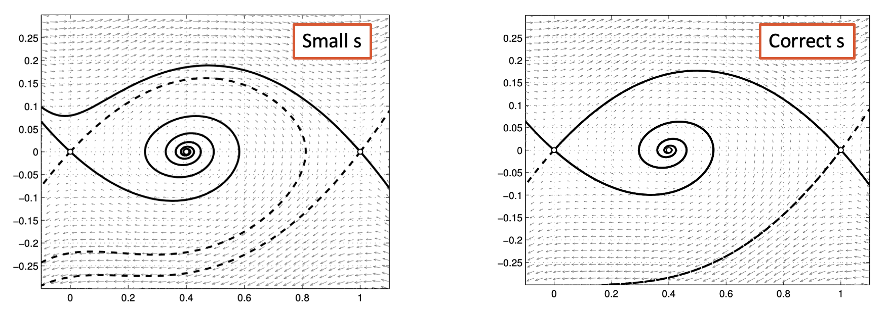

14 The cable equation
This lecture is based on (Keener and Sneyd 2009, vol. 8/I, chap. 5)
14.1 Derivation of the cable equation
The axon is a tubular structure through which ions and currents diffuse primarily along its main axis. As a result, a localized stimulus propagates spatially, though its amplitude diminishes with increasing distance from the point of stimulation. In excitable membranes, the diffusive currents associated with an action potential can be strong enough to trigger additional action potentials in neighboring regions. This cascade effect leads to the propagation of action potentials along the axon.
We can approximate the axon with a cylinder:
![]()
The axon is immersed in an extracellular medium (the bath solution) that we also suppose cylindrical in first approximation. Usually, the extracellular space is much larger in volume than the intracellular one. The cellular membrane, where ion channels are, is the boundary between the extra- and intra-cellular regions. We also suppose that all quantities (currents, potential) vary only in the longitudinal direction.
Consider a intra-cellular (resp. extra-cellular) cross-section of area \(A_i\) (resp. \(A_e\)) and length \(\mathrm{d}x\). We denote the intra- and extra-cellular electrical potential along the longitudinal direction with \(\phi_i(x,t)\) and \(\phi_e(x,t)\). For the Ohm’s law, we have that the intra- and extra-cellular currents are: \[ \begin{aligned} I_i(x,t) &= - \frac{1}{R_i} \cdot \bigl(\phi_i(x+\mathrm{d}x) - \phi_i(x) \bigl), \\ I_e(x,t) &= - \frac{1}{R_e} \cdot \bigr(\phi_e(x+\mathrm{d}x) - \phi_e(x) \bigr), \end{aligned} \]
where \(I_i(x,t)\) and \(I_e(x,t)\) are the currents and \(R_e\), \(R_i\) are the resistances of the cross-sections. Remember that the resistance is: \[ R = \frac{r\ell}{A}, \]
where \(r\) is the resistivity, \(A\) the cross-section, and \(\ell\) the length. Therefore: \[ \begin{aligned} I_i(x,t) &= - \frac{A_i}{r_i} \frac{\phi_i(x+\mathrm{d}x) - \phi_i(x)}{\mathrm{d}x} \xrightarrow{\mathrm{d}x\to 0} -\frac{A_i}{r_i}\frac{\partial\phi_i}{\partial x}, \\ I_e(x,t) &= - \frac{A_e}{r_e} \frac{\phi_e(x+\mathrm{d}x) - \phi_e(x)}{\mathrm{d}x} \xrightarrow{\mathrm{d}x\to 0} -\frac{A_e}{r_e}\frac{\partial\phi_e}{\partial x}. \end{aligned} \]
Now we do a balance of the currents. For the intracellular section, we have 3 surfaces for the cylinder: the two ends, at \(x\) and \(x+\mathrm{d}x\), and the membrane. By convention, the transmembrane current density, denoted by \(J_m(x,t)\), flows from the intracellular to the extracellular space. Summing up we have: \[ I_i(x+\mathrm{d}x,t) = I_i(x,t) - \int_{x}^{x+\mathrm{d}x} p J_m(z,t) \: \mathrm{d}z, \]
where \(p\) is the perimeter of the axon. Rearranging, diving by \(\mathrm{d}x\), and taking the limit assuming that \(J_m\) is regular, we have: \[ \frac{\partial I_i}{\partial x} = - p J_m(x,t). \]
For the extracellular space, the hollow cylinder has 4 faces: the ends, the membrane, and the outer surface. For this last one, we suppose that the bath is insulated, so there is no current flow through it. For the rest is as above: \[ \begin{split} &I_e(x+\mathrm{d}x,t) = I_e(x,t) + \int_{x}^{x+\mathrm{d}x} p J_m(z,t) \: \mathrm{d}z, \\ \leadsto{}& \frac{\partial I_e}{\partial x} = p J_m(x,t). \end{split} \]
The transmembrane current density (current per unit area) depends on the transmembrane voltage, according to the Hodgkin-Huxley model, in Equation 13.1: \[ J_m(x,t) = C_m \frac{\partial V_m}{\partial t} + I_\text{ion}(V_m), \]
where \(V_m(x,t) = \phi_i(x,t)-\phi_e(x,t)\) is the transmembrane potential and \(I_\text{ion}\) is the sum of ion currents. Also the gating variables, \(m(x,t)\), \(n(x,t)\), \(h(x,t)\), are defined at each point of the membrane, that is they vary both in space and time.
We can now put all together and obtain the following system: \[ \left\{\begin{aligned} \frac{\partial}{\partial x}\Bigl(\frac{A_i}{r_i}\frac{\partial\phi_i}{\partial x} \Bigr) &= p \Bigl( C_m \frac{\partial V_m}{\partial t} + I_\text{ion}(V_m) \Bigr), \\ \frac{\partial}{\partial x}\Bigl(\frac{A_e}{r_e}\frac{\partial\phi_e}{\partial x} \Bigr) &= - p \Bigl( C_m \frac{\partial V_m}{\partial t} + I_\text{ion}(V_m) \Bigr), \\ V_m = \phi_i - \phi_e. \end{aligned}\right. \tag{14.1}\]
The above system can be further simplified by exploiting some symmetries. Summing up the first 2 equations we have: \[ \frac{\partial}{\partial x}\Bigl( \frac{A_i}{r_i}\frac{\partial\phi_i}{\partial x} + \frac{A_e}{r_e}\frac{\partial\phi_e}{\partial x} \Bigr) = 0, \]
hence: \[ \frac{A_i}{r_i}\frac{\partial\phi_i}{\partial x} + \frac{A_e}{r_e}\frac{\partial\phi_e}{\partial x} = I_\text{tot}(t), \]
where \(I_\text{tot}(t)\) is the total current. Now we replace \(\phi_i\), since \(\phi_i = \phi_e + V_m\): \[ \frac{A_i}{r_i}\frac{\partial V_m}{\partial x} + \Bigl(\frac{A_i}{r_i}+\frac{A_e}{r_e}\Bigr)\frac{\partial\phi_e}{\partial x} = I_\text{tot}(t), \]
and solve with respect to \(\phi_e\): \[ \frac{\partial\phi_e}{\partial x} = \frac{r_i r_e}{A_i r_e + A_e r_i} I_\text{tot}(t) -\frac{A_i r_e}{A_i r_e + A_e r_i} \frac{\partial V_m}{\partial x}. \]
Now we replace this expression into the second equation of Equation 14.1. We have that: \[ \frac{\partial}{\partial x}\Bigl(\frac{A_e}{r_e}\frac{\partial\phi_e}{\partial x}\Bigr) = \frac{\partial}{\partial x}\Bigl(\frac{A_e r_i}{A_i r_e + A_e r_i}\Bigr) I_\text{tot}(t) -\frac{\partial}{\partial x}\Bigl(\frac{A_i A_e}{A_i r_e + A_e r_i} \frac{\partial V_m}{\partial x}\Bigr). \]
Assuming that the cross-section \(A\) is constant, as well as the resistivities, the first term cancels and we end up with the following equation cable equation: \[ p \Bigl( C_m \frac{\partial V_m}{\partial t} + I_\text{ion}(V_m) \Bigr) = \frac{A_i A_e}{A_i r_e + A_e r_i} \frac{\partial^2 V_m}{\partial x^2}. \tag{14.2}\]
Note that this equation has only \(V_m\) as variable, and not \(\phi_i\) and \(\phi_e\). In this way, we can approximate the transmembrane potential without caring of the potential in the whole space.
14.2 Non-dimensionalization
We rescale the time and space as follows: \[ \tilde{x} = \frac{x}{\lambda_m}, \quad \tilde{t} = \frac{t}{\tau_m}, \]
where \(\lambda_m\) and \(\tau_m\) are respectively the space and time membrane constants. We also consider the membrane specific resistance at rest as: \[ R_m = \left. \frac{\mathrm{d}I_\text{ion}}{\mathrm{d}V_m}\right|_{\text{equilibrium}} \]
and define the \(f = - R_m I_\text{ion}\) as the rescaled current. Substituting into the equation we have: \[ \frac{C_m R_m}{\tau_m} \frac{\partial V_m}{\partial\tilde{t}} - f(V_m) = \frac{A_i A_e R_m}{p(A_i r_e + A_e r_i)} \frac{1}{\lambda_m^2}\frac{\partial^2 V_m}{\partial \tilde{x}^2}. \]
Taking: \[ \begin{aligned} \tau_m &= C_m R_m, \\ \lambda^2_m &= \frac{A_i A_e R_m}{p(A_i r_e + A_e r_i)}, \end{aligned} \]
we reduce the equation to: \[ \frac{\partial \tilde{V}_m}{\partial\tilde{t}} - f(\tilde{V}_m) = \frac{\partial^2 \tilde{V}_m}{\partial \tilde{x}^2}, \tag{14.3}\]
which is a non-linear reaction-diffusion equation in the variable \(V_m\) and the gating variables. The equation is a partial differential equation, because we have derivatives with respect to both \(x\) and \(t\).
14.3 Travelling waves
A key characteristic of some reaction-diffusion systems are travelling waves, that is solutions of the form: \[ V_m(x,t) = U(x + ct) = U(\xi), \]
for some function \(U(\xi)\) (the wave profile) and velocity \(c\). In space-time, \(V_m(x,t)\) will look the same along the characteristics \(\xi = x + ct\). The variable \(\xi\) is also called travelling coordinate. Note that both \(U\) and \(c\) are still unknowns (unless we solve the cable equation), but at least we reduced the dimensionality of the problem from \((x,t)\) to only \(\xi\).
A travelling wave should like this (ignore the interaction with the boundaries): 
Given a travelling wave for the cable equation in Equation 14.3, we have: \[ \tilde{V}_m(\tilde{x},\tilde{t}) = \tilde{U}(\tilde{x} + s\tilde{t}) = \tilde{U}\Bigl(\frac{x}{\lambda_m} + s \frac{t}{\tau_m} \Bigr) = \tilde{U}\Bigl(\frac{x + s\frac{\lambda_m}{\tau_m}t}{\lambda_m}\Bigr) = U(x + ct), \]
where \(\xi = \lambda_m \tilde{\xi}\) and \[ c = s \frac{\lambda_m}{\tau_m}, \]
is the velocity in terms of a parameter \(s\) (the velocity in the rescaled equations) and the time and space constants. The advantage of this formula is that \(s\) is a fixed parameter, only depending on \(f\) (thus, the ionic dynamics). Replacing the true values we have: \[ c = s \frac{1}{R_m C_m} \sqrt{\frac{A_i A_e R_m}{p(A_i r_e + A_e r_i)}}. \]
For a cylindrical axon of diameter \(d\) and \(p = \pi d\), \(A_i = \pi d^2/4\). We also take \(A_i \to \infty\), because we assume that the bath is very large compared to the size of the axon. Thus: \[ c = \frac{s}{C_m} \sqrt{\frac{d}{4 R_m r_i}}. \]
With this expression we see that the velocity of propagation increases when \(d\) increases, or when the intracellular (or cytoplasmic) resistivity decreases, or when the membrane conductivity \(R_m^{-1}\) increases. In the squid, the axon is giant because \(d\) is large, and this ensures a fast propagation in the body. Alternatively, we can reduce (or even block) the propagation by reducing sodium channels, because \(R_m^{-1} \approx g_{\ce{Na}}\) at rest, or increase the speed by increasing the density of channels per unit area of the membrane.
14.4 FitzHugh-Nagumo model with diffusion
We still need to prove that travelling waves actually exist for the cable equation. We can tackle the problem by studying the FitzHugh-Nagumo approximation of the Hodgkin-Huxley model: \[ \left\{\begin{aligned} \varepsilon \frac{\partial V}{\partial t} &= \varepsilon^2 \frac{\partial^2 V}{\partial x^2} + f(V) - w, \\ \frac{\partial w}{\partial t} &= v - \gamma w = g(v,w), \end{aligned}\right. \]
with \(\varepsilon\ll 1\). Note that we are assuming \(\tau_m = \mathcal{O}(\varepsilon)\) and \(\lambda_m = \mathcal{O}(\varepsilon)\), so that \(c = \mathcal{O}(1)\), that is the velocity is finite in the limit. (Unless \(s\) goes to infinity with \(\varepsilon\), but this will not be the case.)
We already studied the FitzHugh-Nagumo system in the singular limit \(\varepsilon\to 0\). We can do the same here, but we need some care.
14.5 The bistable approximation
For the sake of simplicity, we ignore the the repolarization, that is we set \(g(v,w) = 0\) and \(w=0\). That is, once excited, the membrane remains so, and never recovers. This is not realistic, but it considerably simplifies the analysis. Therefore, we study the so-called bistable or Nagumo equation: \[ \varepsilon \frac{\partial V}{\partial t} = \varepsilon^2 \frac{\partial^2 V}{\partial x^2} + f(V). \tag{14.4}\]
14.5.1 The slow system
We substitute: \[ V(x,t) = U(\xi) = U(x+st), \]
and obtain: \[ s \varepsilon U' = \varepsilon^2 U''+ f(U), \]
where the derivatives are with respect to \(\xi\). Taking \(\varepsilon=0\) we have: \[ 0 = f(U). \]
Remember that \(f(U)\) is a cubic function, \[ f(U) = U(1-U)(U-\alpha). \]
The equation \(f(U) = 0\) has 3 solutions, or branches, see Section 13.4.2. That is, we denote the solutions as \[ U_- \le U_0 \le U_+, \]
where \(U_- = 0\), \(U_0=\alpha\), \(U_+=1\) for this particular choice of \(f(U)\).
Therefore, on the slow scale, the axon can only be in 3 states: resting \(U=U_-\), excited \(U=U_+\), or the threshold state \(U=U_0\). However, as we are going to see, the threshold state is unstable, so the axon can only be excited or resting. Note that this yields a partition of the travelling domain \(\xi\) into regions where the axon is either excited or resting. In the physical space \((x,t)\), such partitions remain, and they move with constant speed \(s\). We still don’t know the velocity (even its sign), though.
![]()
14.5.2 The fast system
To recover the speed, we must “zoom in” around the interfaces between excited and resting regions. Therefore, we set: \[ V(x,t) = U\Bigl( \frac{x+st}{\varepsilon} \Bigr). \]
After substitution we obtain: \[ s U' = U''+ f(U), \tag{14.5}\]
for \(\xi\in\mathbb{R}\). This is a second-order, non-linear ODE. In order to solve it, we need some boundary conditions. The most interesting cases are when we are at the interface between excited and resting regions, otherwise the solution is constant and the equation is trivially satisfied. We can have 2 cases:
- \(U(-\infty) = U_-\) and \(U(+\infty) = U_+\), like the left boundary of the figure above, or
- \(U(-\infty) = U_+\) and \(U(+\infty) = U_-\), like the right boundary of the figure above.
In general, we expect that the front moves from the excited region to the resting region, because we excite the neighbor tissue. We can prove this fact more precisely.
We multiply Equation 14.5 by \(U'\) and then integrate: \[ s \int_{\mathbb{R}} (U')^2 \,\mathrm{d}\xi = \int_{\mathbb{R}} U' U'' \,\mathrm{d}\xi + \int_{\mathbb{R}} f(U)U' \,\mathrm{d}\xi. \]
Now, \(U''U' = (1/2(U')^2)'\), so we can integrate the second term, and \(U'\mathrm{d}\xi = \mathrm{d}U\), to simplify the third integral: \[ s \int_{\mathbb{R}} (U')^2 \,\mathrm{d}\xi = \frac{1}{2} \Bigl[ (U')^2 \Bigr]_{-\infty}^{+\infty} + \int_{U(-\infty)}^{U(\infty)} f(U) \,\mathrm{d}U. \]
We need \(U'(\xi)\to 0\) for \(\xi\to\pm\infty\), otherwise the first integral in \((U')^2\) would be unbounded. Hence, the boundary terms cancel and we get: \[ s = \frac{\int_{U(-\infty)}^{U(\infty)} f(U) \,\mathrm{d}U}{\int_{\mathbb{R}} (U')^2 \,\mathrm{d}\xi}. \]
Using the boundary conditions for \(U\) at infinity, we have: \[ s = \frac{\int_{U_-}^{U_+} f(U) \,\mathrm{d}U}{\int_{\mathbb{R}} (U')^2 \,\mathrm{d}\xi}. \]
The denominator is always strictly positive (when zero, the solution is constant.) Hence, the sign of \(s\) is determined by the signed area of \(f(U)\) between \(U_-\) and \(U_+\). For the cubic \(f(U)\), this will depend on the position of \(\alpha\): when \(\alpha < 1/2\), then \(s > 0\), otherwise \(s<0\). We henceforth always assume \(\alpha < 1/2\) (the other case is symmetric.) Note that for \(\alpha = 1/2\) we have \(s=0\), so no propagation (standing wave).
In summary,
- \(s > 0\) for the left boundary (\(U_-\) to \(U_+\)), so the wave moves to the left,
- \(s < 0\) for the right boundary (\(U_+\) to \(U_-\)), so the wave moves to the right.
![]()
The above formula does not give us a clue of the actual value of \(s\) (just the sign). For the cubic \(f\), we can actually perform the full computation and find \(s\) (and \(U\)) exactly. For a general cubic-like \(f\), it is possible to prove the existence and uniqueness of the travelling wave.
We go back to Equation 14.5, and recast it as a system: \[ \left\{ \begin{aligned} U' &= Z, \\ Z' &= sZ - f(U). \end{aligned} \right. \]
We focus on connecting \(U_-\) to \(U^+\) (the left boundary). Therefore, we look for a trajectory of the system that connects \((0,0)\) to \((1,0)\), that is \(U(\xi)\to U_- = 0\) for \(\xi\to-\infty\), and \(U(\xi)\to U_+ = 1\) for \(\xi\to\infty\). Of course, \(Z(\xi)=U'(\xi)\to 0\) for \(\xi\to\pm\infty\).
The system has 3 equilibria: \(E_0=(0,0)\), \(E_1=(1,0)\) and \(E_\alpha=(\alpha,0)\). For their stability, we look at the Jacobian: \[ J = \begin{pmatrix} 0 & 1 \\ -f'(U) & s \end{pmatrix}. \]
We have that \(\operatorname{tr}J = s > 0\), so no equilibrium is stable. Since \(\det J = f'(U)\), we have that \(E_0\) and \(E_1\) are saddles, and \(E_\alpha\) is unstable.
The objective is construct an orbit that connects \(E_0\) to \(E_1\). Such orbit is called heteroclinic, and it only exists for a very specific value of \(s\): for this value, we have a heteroclinic bifurcation. Since the orbit must start from \(E_0\), we can follow the unstable manifold of \(E_0\). Likewise, since we need to converge into \(E_1\), we can follow the stable manifold of \(E_1\). The bifurcation occurs when the two manifolds collide and merge.
To understand what is happening, we need the phase portrait:

We see that for small \(s\), the unstable manifold of \(E_0\) falls too short, it does not reach \(E_1\) and instead diverges to \(-\infty\). For large values of \(s\), the unstable manifold always stays high, and eventually diverges to \(+\infty\) without reaching \(E_1\). With a bisection argument, since \(E_0\) depends continuously on \(s\), there must exists a value \(\bar{s}\) such that the unstable manifold reaches exactly \(E_1\). This value gives the heteroclinic orbit.
Luckily, for \(s=\bar{s}\), the orbit is a parabola, so there must be: \[ Z = h(U) = bU(1-U), \]
for some value of \(b>0\). Therefore: \[ Z' = h(U)' = h'(U)U' = b(1-2U)Z = b^2U(1-U)(1-2U). \]
Substituting into the equation for \(Z'\): \[ b^2U(1-U)(1-2U) = s bU(1-U) - U(1-U)(U-\alpha). \]
We can remove some terms and collect: \[ bs-b^2 + \alpha + (1-2 b^2) U = 0. \]
This expression must be zero for every \(\xi\in\mathbb{R}\), thus the coefficients must be zero. We have: \[ b = \pm\frac{\sqrt{2}}{2}, \quad s = \pm\frac{\sqrt{2}}{2}(1-2\alpha). \]
We take the solution with the plus, because \(s>0\) and \(b>0\). The other solution is also possible, but connects \(E_1\) to \(E_0\). So we conclude that the propagation velocity is: \[ s = \frac{\sqrt{2}}{2}(1-2\alpha). \tag{14.6}\]
We can also compute the front shape \(U(\xi)\). Since \(U' = Z = h(U)\), we need to solve: \[ U' = b U(1-U), \]
which is the logistic equation! The general solution is: \[ U(\xi) = \frac{1}{1 + C e^{-b\xi}}. \]
The constant is arbitrary, and we cannot determine it from the boundary conditions, because \(U(\xi)\to 1\) for \(\xi\to\infty\) and \(U(\xi)\to 0\) for \(\xi\to-\infty\), for any \(C>0\). The arbitrariness is expected, because the heteroclinic orbit is defined up to a phase shift (if we put \(\hat\xi = \xi + \xi_0\) the solution is the same.) Therefore, we set \(C=e^{-b\xi_0}\) or more simply \(C=1\).
We also note that: \[ \tanh \xi = \frac{e^{2\xi}-1}{e^{2\xi}+1}, \]
so, \[ U(\xi)=\frac{1}{1+e^{-b\xi}} = \frac{1}{2}\bigl( \tanh(b\xi/2) + 1 \bigr) = \frac{1}{2}\left( \tanh\Bigl(\frac{\xi}{2\sqrt{2}}\Bigr) + 1 \right). \]
For the other case, when we connect \(U_+\) to \(U_-\), the solution is exactly the opposite.
In conclusion, the solution is: \[ V(x,t) = U\Bigl( \frac{x+st}{\varepsilon} \Bigr) = \frac{1}{2}\left( \tanh\Bigl(\frac{x+st}{2\varepsilon\sqrt{2}}\Bigr) + 1 \right), \]
and \(s\) as in Equation 14.6. The solution is actually exact for Equation 14.4, we don’t even need the fast-slow analysis. In the limit \(\varepsilon\to 0\), we recover the slow dynamics: the solution converges to a Heaviside function and the front moves with velocity \(s\).